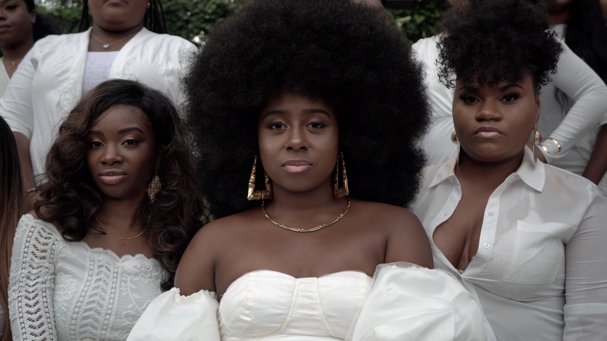

Design Challenge
Finding Where To Start
In this excercise I try to figure out what problem it is that I need to solve, and try to come up with basic ideas of how to solve it.
Finding Where To Start
In this excercise I try to figure out what problem it is that I need to solve, and try to come up with basic ideas of how to solve it.

Figuring It Out Part 1
Begining the research process with finding whatever information there is about Mary's House on the internet.

Figuring It Out Part 2
Ending the research process by finding information about areas that Mary's House hopes to effect.

Gaining Insight
Finding people to talk about how they feel about the past website and changes that they would like to see.